Tell it what to back up
Drop in your Documents folder, your Pictures, the whole C: drive — anything that matters. Live size estimation while you choose, so you'll know up front if it fits.
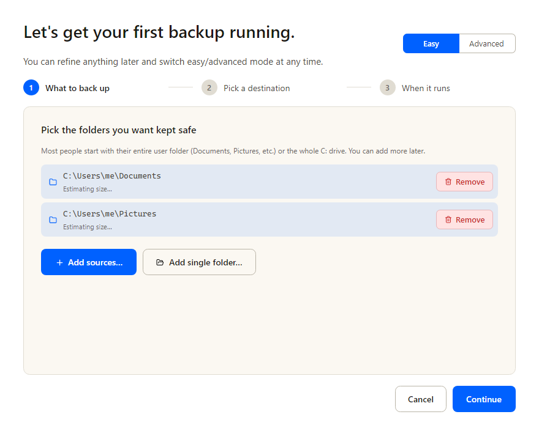
A desktop GUI for Duplicacy.
Encrypted, deduplicated backups to the cloud or your own drive.
One .exe, one config folder, zero shell scripting.
Here's the whole flow from clicking the download to recovering a file. Skim it once — it's short.
Drop in your Documents folder, your Pictures, the whole C: drive — anything that matters. Live size estimation while you choose, so you'll know up front if it fits.

Backups can go anywhere: an external drive plugged into the same machine, a folder on your NAS, or a cloud account you already pay for. The wizard shows the destinations you already set up; if you haven't yet, click "Or set up a new destination…" and we'll walk you through it.
The simple path. Pick "External drive" or "Local folder" from the Type dropdown, point us at the path, decide whether to encrypt — no OAuth, no API keys, no tokens. If it's a USB drive that's sometimes unplugged, give us the expected drive letter and volume label so we skip the run cleanly on days it's not connected.
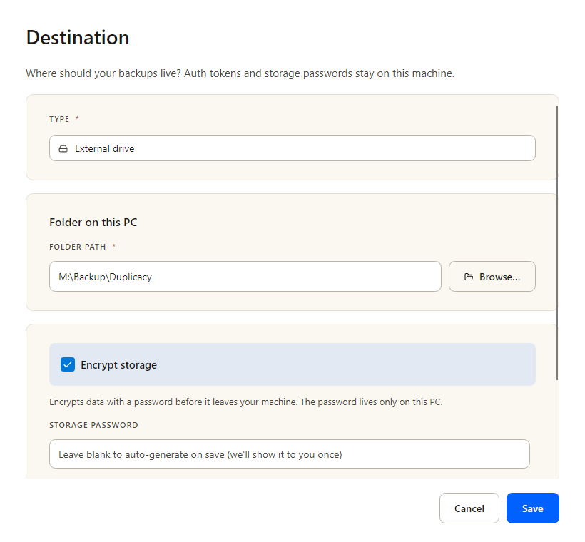
Same starting point — click "Or set up a new destination…" and pick your cloud. We open the provider's sign-in page; you copy back a token; we verify it works before anything writes. For Dropbox we use the app-scoped OAuth flow — the app only ever sees its own sub-folder inside your Dropbox, never the rest of your files. Tokens stay on your machine, encrypted at rest; the cloud provider never sees your data in the clear.
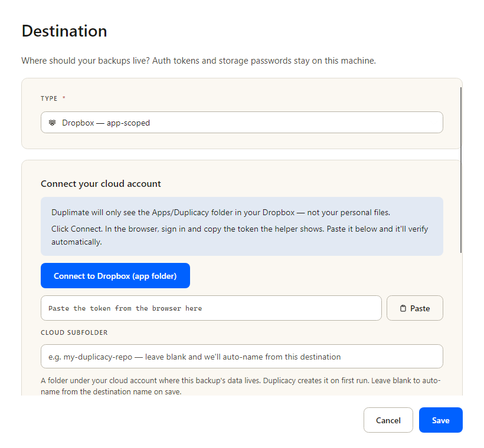
Sensible defaults: nightly at 8 PM, with a retention pyramid (keep daily snapshots for 7 days, weekly for 30, monthly for 90, yearly for 365). Customize freely. One more click and your first backup is running.
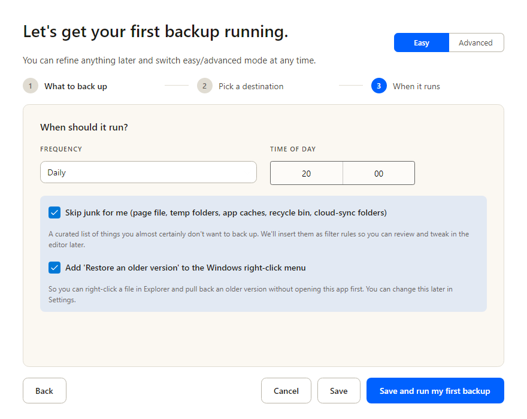
Live progress bar while the first run uploads. After that, the schedule takes over — your machine runs backups when you told it to, and nothing else.
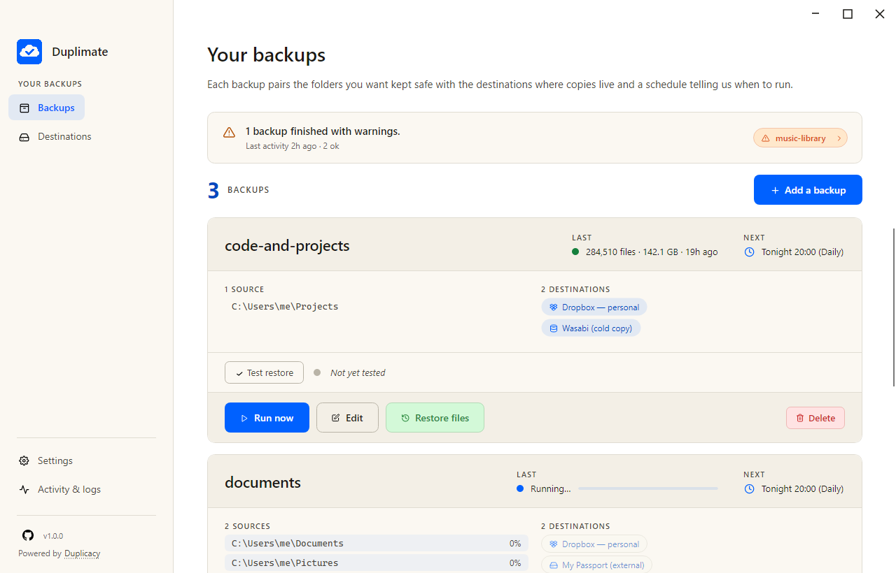
All your backups, one screen. Healthy runs get a quiet green dot; anything that needs attention surfaces at the top of the list.
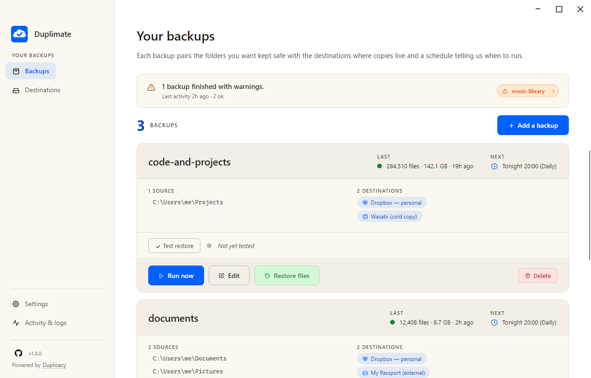
Click Restore files on any backup, or go to the Restore tab. Choose which backup, then which revision — yesterday's, last week's, a year ago.
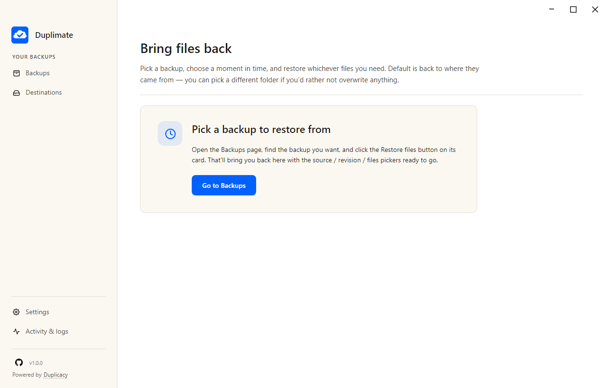
Browse the snapshot. Filter by filename if it's a big repository. Tick checkboxes. The bottom strip shows the file count and total size as you select, so you know how big the restore will be before it starts.
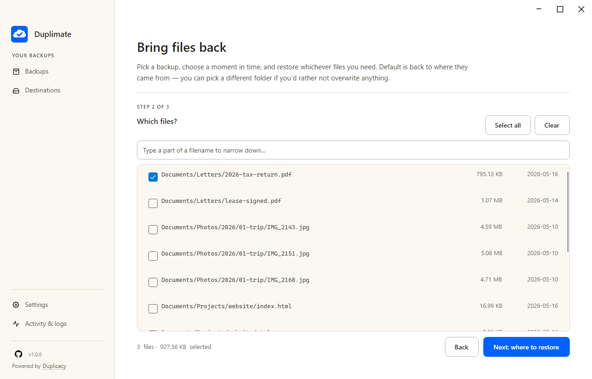
Default is back to where the files originally came from. Or pick a different folder if you'd rather not overwrite anything. Parallel downloads with per-file retry — one slow file doesn't block the rest. Done.
The easy-mode wizard covers the 95% case. When you need more — multiple destinations per backup, exclusion filters, monitoring integration, the full Duplicacy surface — every dial is one click away.
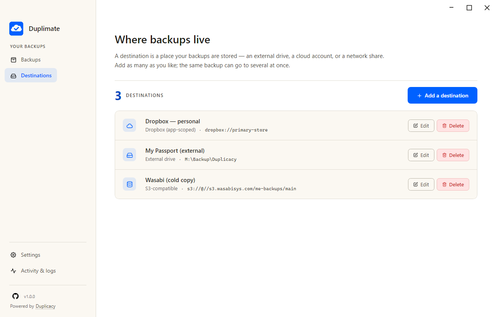
Add, edit, remove. Each backup can write to several destinations — local + cloud for the 3-2-1 rule — and each will only run when its destination is reachable.
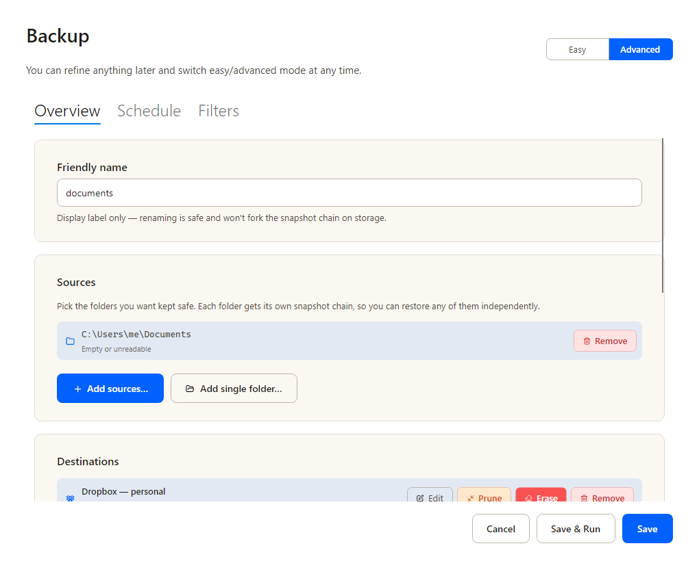
Multiple sources, multiple destinations, filter syntax with live simulation, per-target threads, retention policy, prune / check toggles. Anything Duplicacy supports, with a name to it.
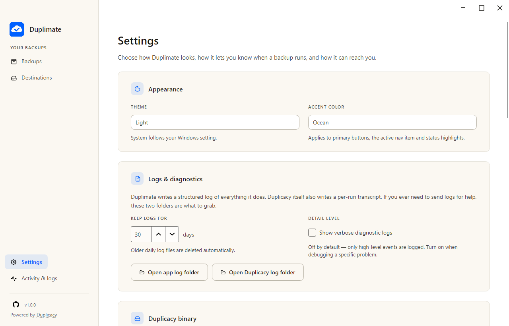
Healthchecks.io auto-setup (paste your API key, we create and name the checks). Failure notifications via Resend or Mailgun SMTP. Theme + accent. Custom Duplicacy binary path if you want to BYO.
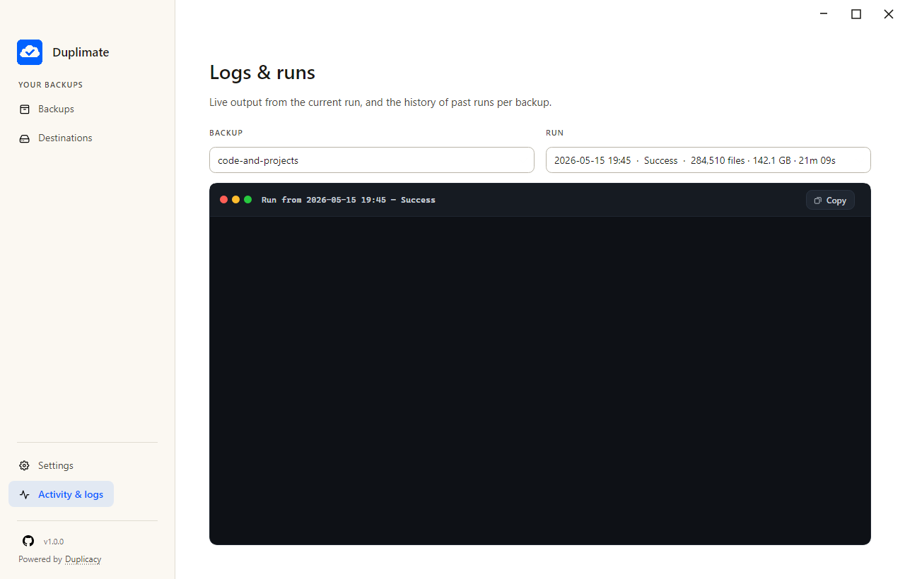
Every run records its files, bytes, duration, exit status. The raw Duplicacy stdout is captured next to each run, so when something looks wrong you can see exactly what.
Everything Duplicacy on the CLI does, plus the things you'd otherwise cobble together from scheduled-task XML, batch scripts, and a watchdog process you wrote at 2 AM.
AES-256 client-side encryption with content-defined chunking. The same file across two backups uploads once. Nothing readable hits the cloud.
Windows Task Scheduler. macOS launchd. Linux systemd. No always-on process — your machine runs backups when you tell it to, and only when you tell it to.
Edit Duplicacy's filter syntax with a live simulation pane. See exactly which files would be included or excluded before the first byte hits the cloud.
Everything lives in Duplimate.config/ next to the binary. Back up the folder, drop it on a new machine, you're done.
Paste your API key, we create and name the checks for you. Local toast + bypassed-Focus-Assist alert with sound on failure. Optional email via Resend or Mailgun SMTP.
On Windows, the only OS that exposes a first-class metered signal: a backup that starts on Wi-Fi and detects a tether mid-run aborts cleanly. No data-plan surprises.
The original author is now focusing on a successor project, Backspace, an Avalonia desktop GUI built around Restic instead of Duplicacy. Duplimate is not deprecated — Duplicacy is still an excellent engine, and Duplimate remains a perfectly serviceable way to use it. If you'd like to take Duplimate forward as a maintainer, open an issue.